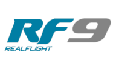

Börja med modellflyg - Organiserat modellflyg.
Se denna informationsvideo, eller läst texten nedanför.
Kontakta modellflygklubb
Börja här på vår karta Skolflygkartan / prova-på ? (Öppnas i ett nytt fönster)
Skånska modellflygfält (Jocke MoPar) (Öppnas i ett nytt fönster)
Dubbelkommando
Klubben hjälper dig igång. De börjar troligen med prova-på och dubbelkommando eller simulator. Många klubbar har skolflygplan, andra har till och med utbildningar.
Medlemskap och regler
- Bli medlem i en klubb och ta del av klubbens regelverk.
- Oavsett vilken klubb du går med i gäller samma grundläggande regelverk. Det innebär att du även ska vara medlem i RCFF eller SMFF. Dessa förbund arbetar för att underlätta och utveckla vår hobby. Hör med din klubb vilket förbund de rekommenderar. Medlemskapet ger dig också den obligatoriska försäkringen som krävs för att flyga på modellflygfält.
- Registrera dig som operatör hos Transportstyrelsen för att få ditt operatörs-ID. Om du inte är myndig behöver en förälder eller annan ansvarig person registrera sig och då vara ansvarig för flygningen. Hör med din klubb hur de hanterar detta.
Mer information finns om regelverk finns under menyn Utbildning Regler
Träna i simulator
Det finns många simulatorer som är realistiska i flygkänslan. Här är bara två exempel.

Realflight - Bra för modellflygplanVelociDrone - Bra för quad/drönare
Med en simulator gör det inget när du kraschar och du kan öva oavsett väder och utan lärare.
Köpa utrustning
Hör först med din lärare eller den som hjälper dig vad som passar just dig bäst - innan du köper något.
Det du behöver är:
- Modell - Vad är en lämplig första modell? Mitt första flygplan
- Radioutrustning - Denna använder du länge så tänk lite framåt. Alla mottagarna kostar också, så det blir en investering. Välja sändare/radio
- Laddare - Tänk på hur stora modeller du kommer att flyga framöver. (Vad det blir för batterier framöver) Min första laddare
Glöm inte att märka din modellen med ditt Operatörs-ID. Har du flera modeller är det samma ID som används på samtliga modeller.
För att hålla priset nere, kolla begagnat i din klubb eller på en swapmeet. På ett swapmeet kan du göra riktigt bra fynd.
Flygplan - Köper du begagnat räcker 2000-3000 kr för det du behöver för att börja (Sändare, flygplan med mottagare, batteriladdare, några batterier).
Dubbelkommando igen
Låt gärna någon i klubben kontrollera, ställa in och provflyga din modell. Det är klokt att använda dubbelkommando eller ha en erfaren pilot bredvid sig de första gångerna du flyger med din egen modell.
Nu är jag utbildad
Nu har du gått igenom de regler som gäller och kontrollerat vad som gäller på den plats där du vill flyga.
Du har registrerat ett operatörs-ID och ordnat försäkring via RCFF eller SMFF.
Modellen är märkt och inspekterad av dig själv. Du har även kontrollerat NOTAM så att inga tillfälliga restriktioner finns.
Då är det bara att flyga och ha kul!
Tänk på att du blir lätt trött i början, så ta gärna en kort paus mellan batteribytena.
Grattis
Grattis, nu är du pilot! Välkommen att njuta av en trevlig hobby!